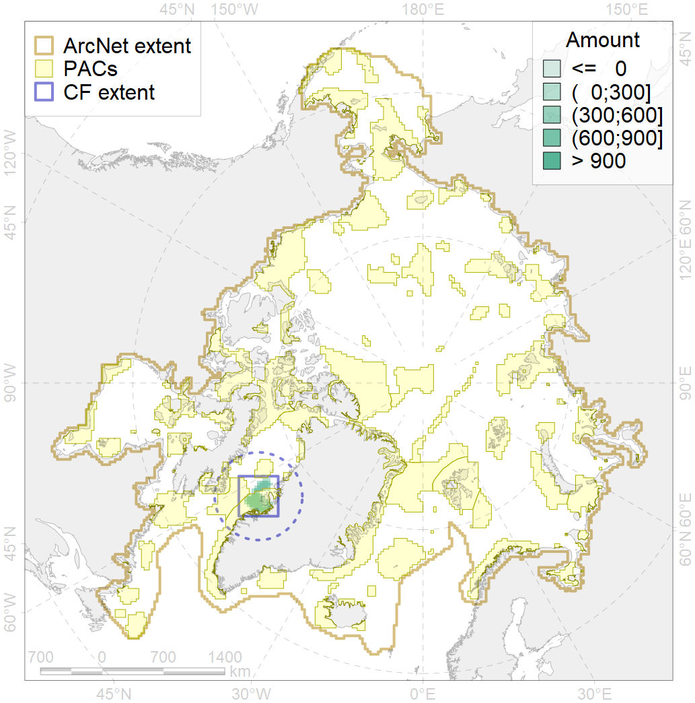
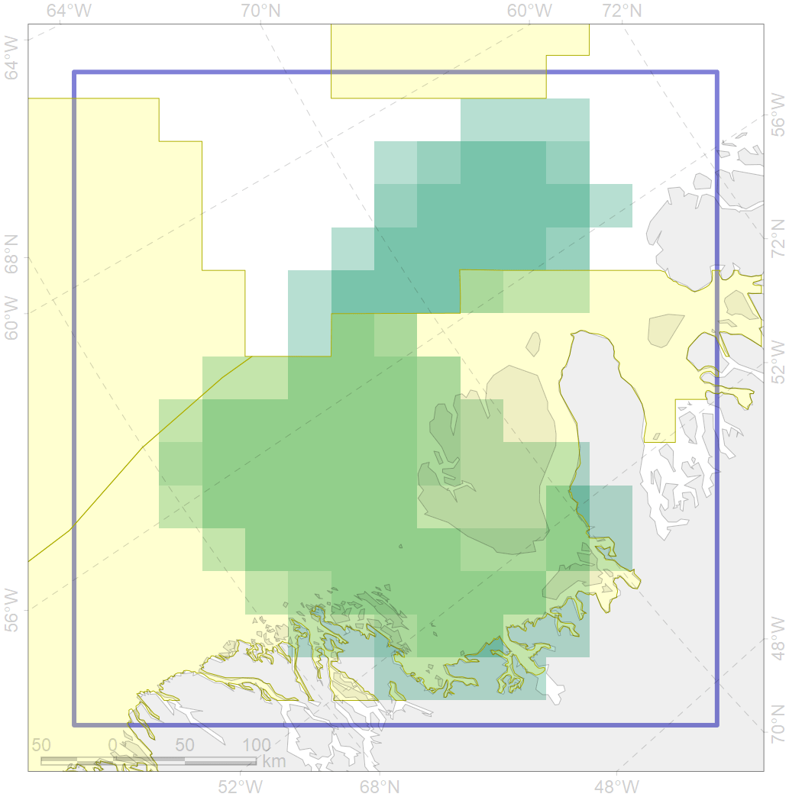

5040

| CF code | 5040 |
| CF name | Bowhead whale spring concentrations in the Baffin Bay |
| Time Period | 2001-2011 |
| Source(s) | Nielsen et al 2015; Boertmann and Mosbech 2017; Chambault et al 2018 |
| Seasonality | May-June |
| Depth Horizon | 0-250 |
| Methodology | Satellite tagging |
| Use Restrictions | |
| Author Name | Filatova |
| Notes | |
| Scenario’s Target | 0.72 |
| Target Achievement | 0.724 (Scenario: 100.5%) |
| PAC | Share of the Total Amount within the PAC | Share of the Target Achievement for the ArcNet | PAC’s Contribution to the Target Achievement |
|---|---|---|---|
| 44 | 71.0%80.8% | 94.5%98.5% | 94.0%98.0% |
| 45 | 0.2%0.8% | 0.2%1.1% | 0.2%1.1% |
| inner | 71.1%81.6% | 94.7%99.6% | 94.2%99.1% |
| outer | 28.9%42.2% | 5.8%20.4% | 5.8%20.3% |
| † supplement values are for area consistence whereas principal values are for Accenter compatible gridded stats |